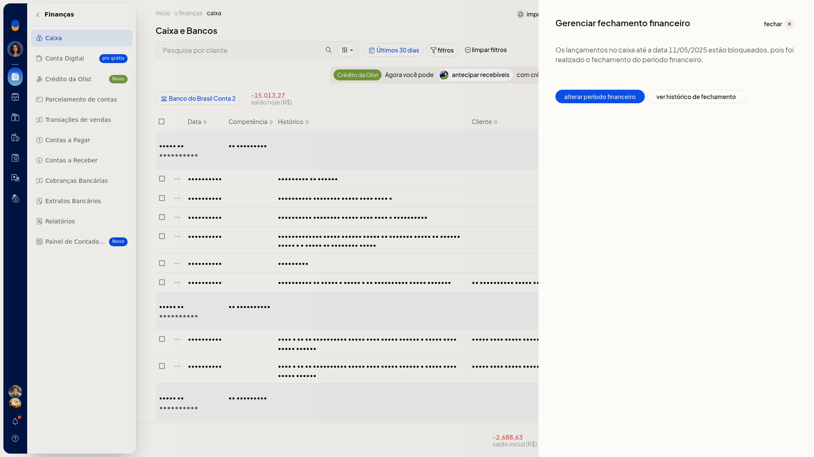
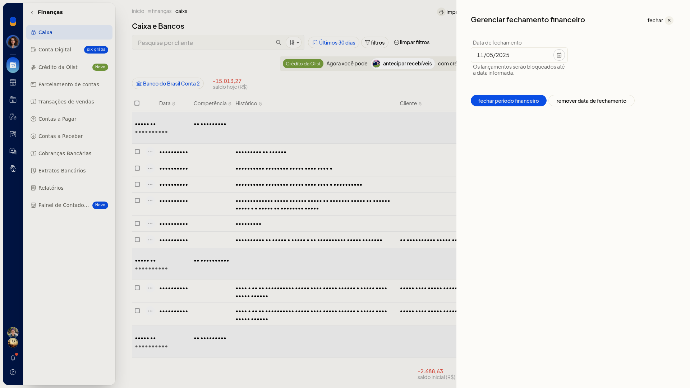
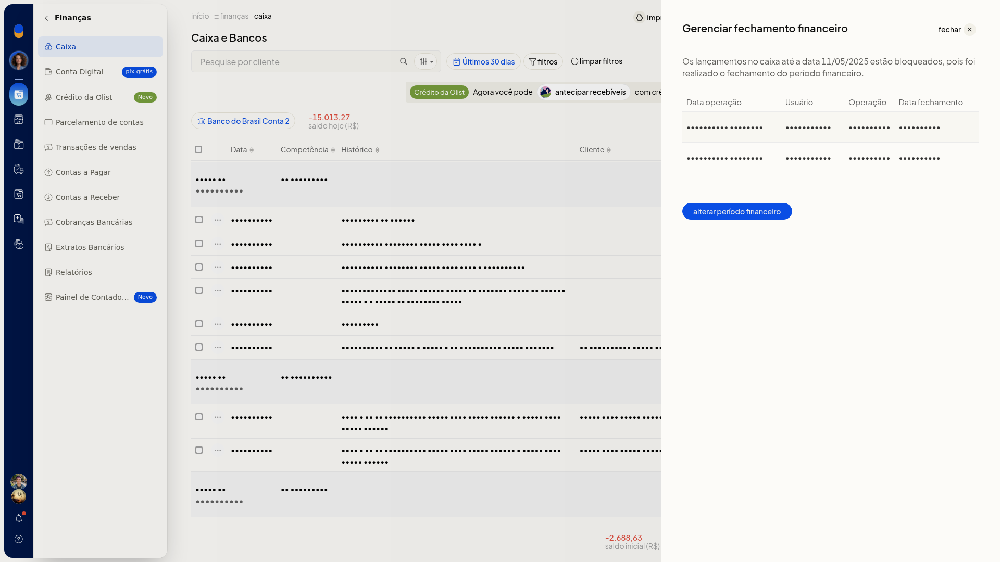
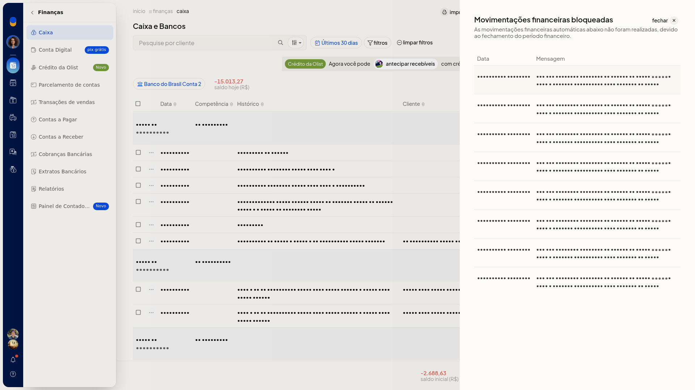

Fechamento financeiro
Importante
- Enquanto houver data de fechamento, os lançamentos do caixa ficam bloqueados até essa data.
- Estornos automáticos de contas de uma venda não são realizados quando o período financeiro está fechado na data do movimento.
Instruções
Alterar a data de fechamento
-
Acesse Finanças > Caixa.
-
Clique em Mais ações e selecione Gerenciar fechamento financeiro. O painel informa que os lançamentos no caixa estão bloqueados até a data de fechamento exibida.

-
Clique em Alterar período financeiro.
-
No campo Data de fechamento, digite a data no formato DD/MM/AAAA. O campo não é obrigatório. A tela informa que os lançamentos serão bloqueados até a data informada.

-
Clique em Fechar período financeiro para bloquear os lançamentos até a data informada. Para retirar a data de fechamento, clique em Remover data de fechamento.
Consultar o histórico de fechamento
-
Acesse Finanças > Caixa.
-
Clique em Mais ações e selecione Gerenciar fechamento financeiro.
-
Clique em Ver histórico de fechamento. A tabela mostra Data operação, Usuário, Operação e Data fechamento, com as operações de Fechamento.

Consultar movimentações bloqueadas
-
Acesse Finanças > Caixa.
-
Clique em Mais ações e selecione Movimentações financeiras bloqueadas. O painel avisa que as movimentações financeiras automáticas não foram realizadas por causa do fechamento do período.

-
Confira a tabela com as colunas Data e Mensagem. As mensagens indicam que não foi possível estornar as contas de uma venda porque o período financeiro está fechado na data.
Resultado
Com uma data de fechamento definida, os lançamentos do caixa ficam bloqueados até essa data. No histórico, as operações de Fechamento aparecem com Data operação, Usuário, Operação e Data fechamento. Em Movimentações financeiras bloqueadas, cada linha traz a data e a mensagem do estorno que não ocorreu.